Porque nasceu
Um site que mostra o trabalho e trabalha sozinho
Eu precisava de um sítio para mostrar o que faço, com preços à vista e sem jargão. Mas também de uma forma de nunca perder um pedido: quem pede pelo site, pelo WhatsApp ou pelo Instagram tem de ficar registado, com o próximo passo marcado.
E queria levar o CRM às reuniões e mostrá-lo a funcionar no meu ecrã, sem depender dos dados de um cliente. Daí nasceu o modo demonstração: o mesmo CRM, com dados de exemplo para quatro tipos de negócio, onde nada fica guardado.
Por fim, o diagnóstico grátis: uma forma honesta de começar uma conversa. A pessoa vê o que está bem e o que falta no seu site, recebe o relatório por email, e eu recebo o pedido no CRM com tudo o que foi encontrado.
Do diagnóstico grátis ao pagamento recebido, tudo no mesmo sítio, com o nome do negócio.
O que entreguei
Tudo o que foi feito, discriminado
O site, para quem procura
Planeta em órbita
No início, um planeta a rodar com os meus projetos em órbita, à frente e atrás dele, e uma lua que se esconde por trás. Em telemóveis, continua leve.
O CRM a nascer, ao vivo
Uma secção mostra o CRM a construir-se em 7 passos: marca, separadores, números do dia, pedidos, próximo passo, proposta e pagamento. Com movimento reduzido, mostra o resultado final.
7 serviços com preço à vista
Cada serviço tem a sua página: para quem é, o antes e o depois, o que inclui, o prazo, o preço e as perguntas frequentes. O menu não mostra preços; ficam dentro de cada página.
6 projetos reais
ARQEC, Academia ORIGEM, ELO, Tato Digital, BlueTime e Pequenos Encantos, cada um com a sua página.
Contacto que chega ao CRM
O formulário guarda o pedido no CRM, com consentimento, e envia-me um aviso por email. O botão de WhatsApp leva a mensagem já escrita.
Encontrado e partilhável
Título e descrição para o Google em cada página, imagem de partilha para WhatsApp e redes, mapa do site com 22 endereços e regras para o Google.
O diagnóstico grátis
12 pontos, sem jargão
Ligação segura, título, descrição para o Google, título principal, descrições das imagens, telemóvel, língua, imagem de partilha, mapa do site, regras para o Google, velocidade e contacto com um toque. Uma nota de 0 a 100.
Velocidade medida pela Google
A velocidade no telemóvel vem do PageSpeed Insights da própria Google: a nota oficial e o tempo até aparecer o conteúdo principal. Corre ao mesmo tempo que o resto da análise.
Justo com sites do Canva e do Wix
Nesses sites, os botões e as imagens são montados no navegador. O diagnóstico procura os contactos nos dados da página e marca como «por confirmar» o que não consegue ver, em vez de acusar sem provas.
Relatório por email
A pessoa recebe a nota e os 12 pontos, com os botões para falar comigo. Eu recebo um aviso de novo pedido. O pedido fica no CRM com a nota e o que falta.
«O diagnóstico do seu site: 54/100»
Seguro por dentro
Recusa endereços internos e IPs diretos, segue redireccionamentos um a um, corta páginas acima de 2 MB e espera no máximo 10 segundos. No máximo 5 diagnósticos por hora por aparelho.
Um exemplo com cara própria
Enquanto analisa, um site fictício de uma padaria é «lido» por uma linha de luz, com os avisos a aparecer em cima de cada parte e a nota dentro de um planeta.
O CRM, para o dia a dia
Hoje
Os números do dia (pedidos novos, conversas marcadas, ganhos do mês, mensalidades) e o que fazer hoje, com os atrasados assinalados.
Pedidos
De onde veio (site, WhatsApp, Instagram, telefone…), estado, próximo passo com data, motivo de perda, notas internas, WhatsApp e chamada com um toque, e exportação para Excel.
Clientes e projetos
Um pedido ganho vira cliente e projeto. Cada projeto avança em 7 passos, da conversa inicial ao acompanhamento, com prazo e preço.
Pagamentos e mensalidades
Sinal, pagamento final, extras e mensalidades, com datas e o que já foi pago. As mensalidades do mês lançam-se com um botão.
Propostas em PDF
Capa com a marca, índice, informações, quem somos, o que inclui, orçamento, IVA, fases de pagamento, como decorre e espaço para assinaturas. No telemóvel, a folha A4 encolhe inteira.
Proposta escrita a partir do diagnóstico
Num pedido de diagnóstico, «Criar proposta» escreve o que foi encontrado, o que proponho e o que muda, escolhe entre página nova e correções e preenche o prazo. Sem promessas de lugares no Google.
Para mostrar e para vender
Modo demonstração
O mesmo CRM com dados de exemplo para quatro negócios: atelier e obras, salão, formação e serviços. Nada fica guardado e há um botão para repor tudo.
A marca CRM LELUEL
Todos os painéis que faço levam «CRM LELUEL» com o nome do cliente por baixo. Na ARQEC, por exemplo, aparece «CRM LELUEL · ARQEC · Edelvino Cristiano».
Entrada segura
Entrada com Google ou palavra-passe, com recuperação por email. Só a conta de administração vê pedidos, clientes, projetos, pagamentos e propostas.
Ecrãs
Como se vê
As capturas do CRM são do modo demonstração, com dados de exemplo. Nenhum cliente real aparece aqui.
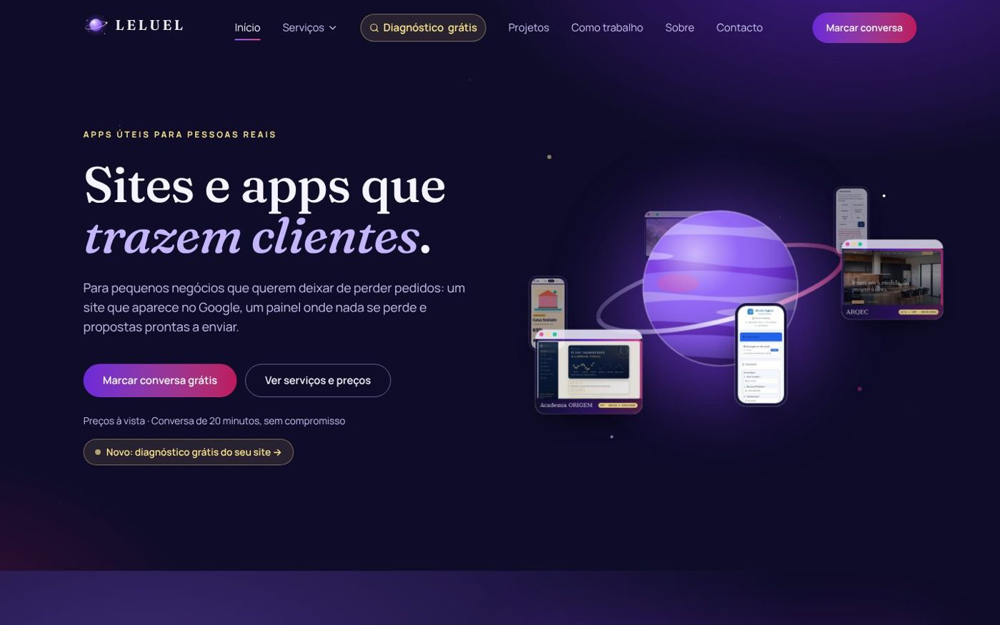
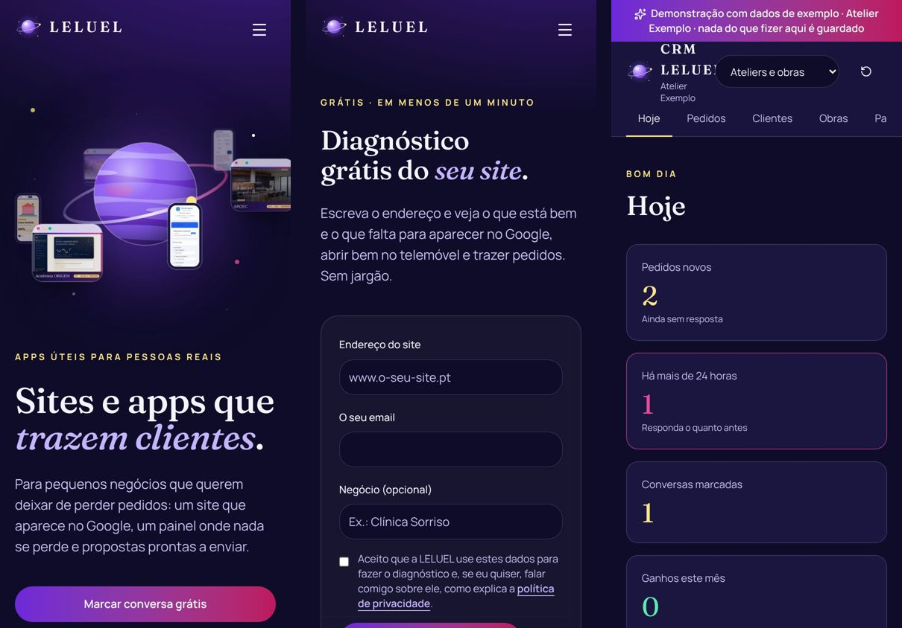
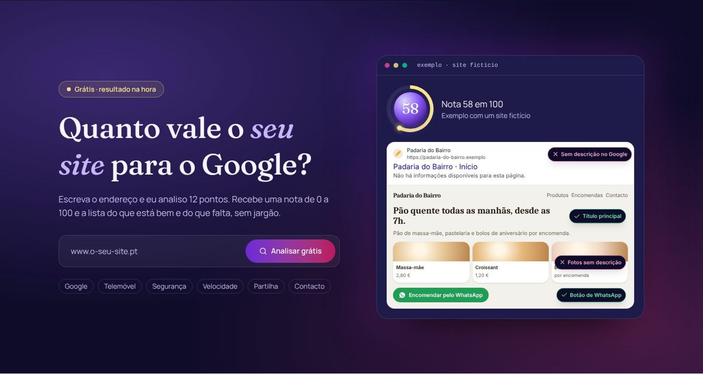
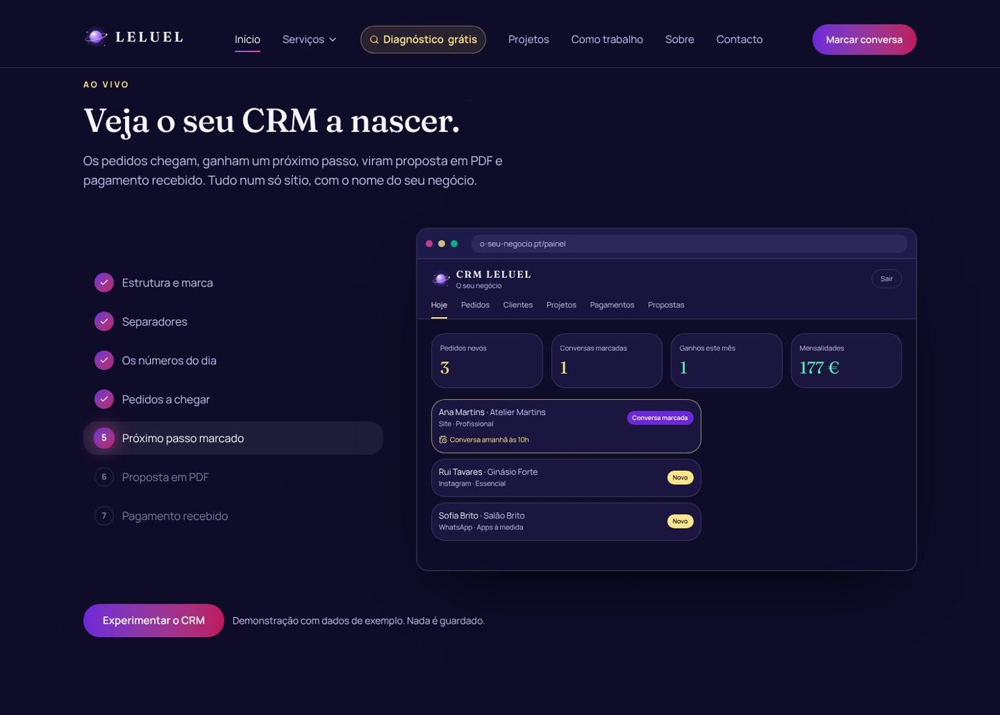
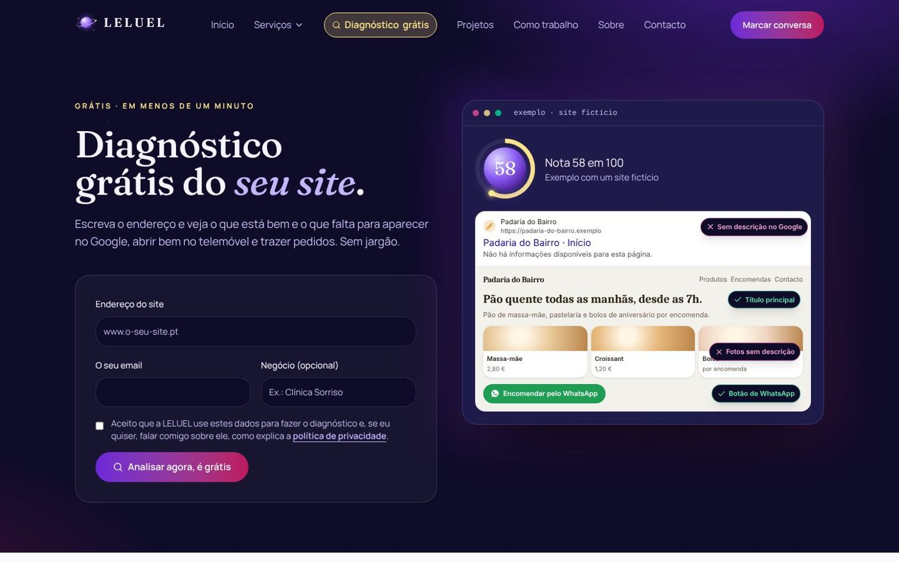
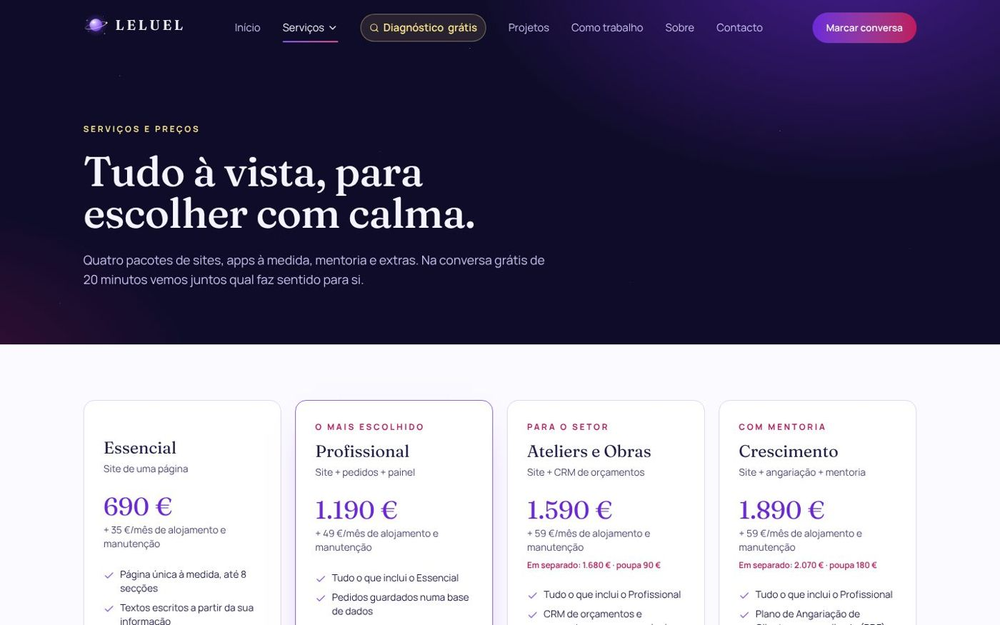
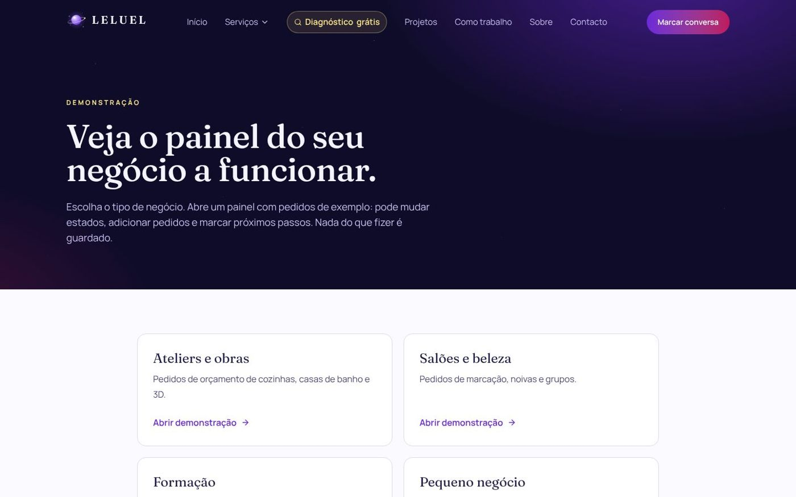
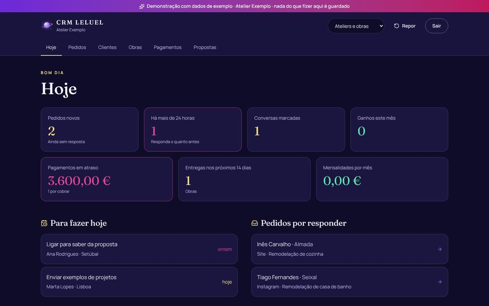
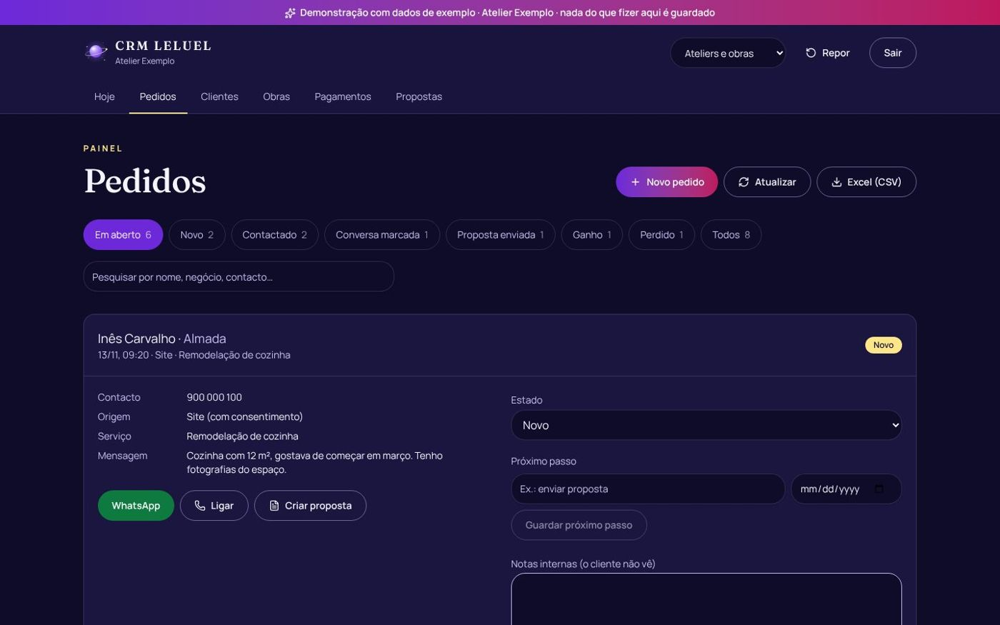
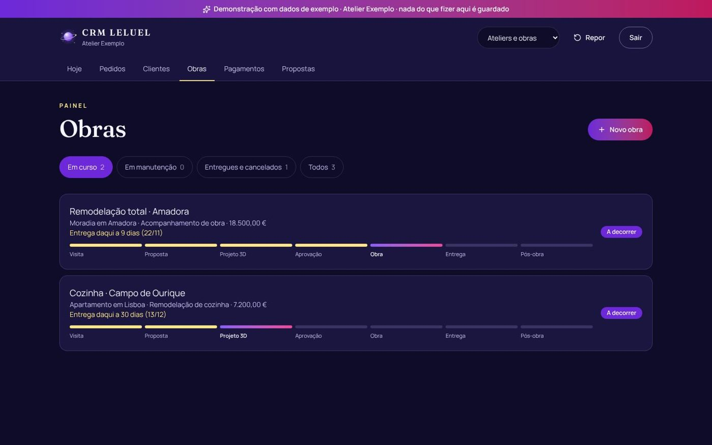
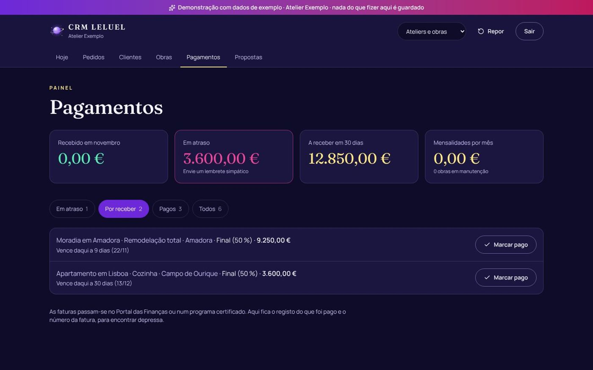
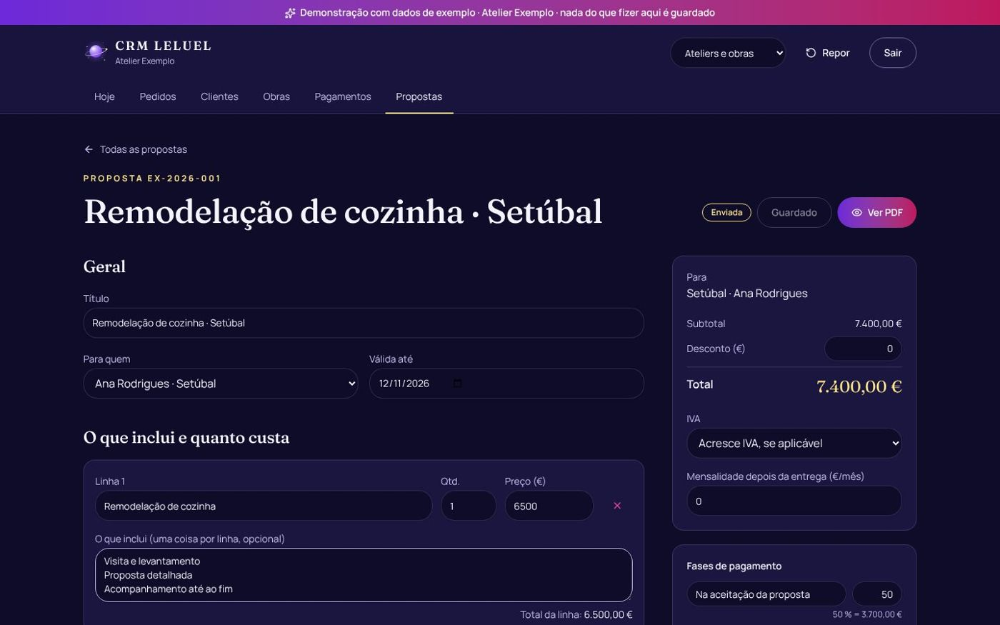
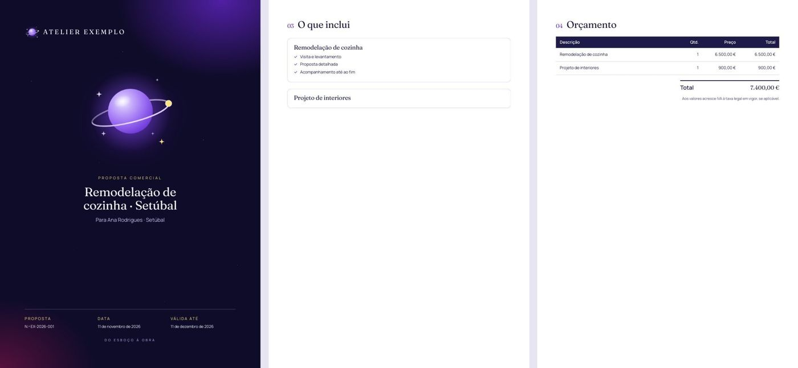
Por dentro
De um diagnóstico a um cliente com mensalidade
- Visitante
Faz o diagnóstico
Escreve o endereço do site e o email. Em menos de um minuto vê a nota, os 12 pontos e o que fazer a seguir.
- Automático
Relatório e aviso
A pessoa recebe o relatório por email. Eu recebo o aviso de novo pedido, e o pedido entra no CRM com a nota e o que falta.
- LELUEL
Próximo passo
Abro o pedido, respondo por WhatsApp com um toque e marco a conversa com data. Se o dia passar, o pedido aparece como atrasado.
- LELUEL
Proposta já escrita
«Criar proposta» escreve o que encontrei, o que proponho e o que muda, com o serviço e o prazo. Reviso e descarrego o PDF.
- Os dois
Aceite, projeto e pagamentos
Proposta aceite, o pedido vira cliente e projeto em 7 passos. O sinal, o pagamento final e as mensalidades ficam registados.
Como foi feito
As ferramentas, explicadas sem jargão
Construir e publicar
Onde o site vive e é publicado, em leluel.lovable.app.
Guarda o código e o histórico. Cada alteração passou por um pedido de revisão aprovado antes de ser publicada: 21 até agora.
Ajudou a escrever o código, os testes e os textos, a partir das minhas instruções e das minhas escolhas.
O site por dentro
Pedidos, clientes, projetos, pagamentos, propostas e tarefas. Regras na base de dados garantem que só a conta de administração os vê. Os pedidos do site entram por uma função com limite por hora.
A Google abre o site como um navegador num telemóvel e devolve a nota de velocidade e a verificação das descrições das imagens.
Envia o relatório do diagnóstico e os avisos de novo pedido. Sem a chave, o site continua a funcionar sem emails.
As páginas, as animações, a identidade da LELUEL e a adaptação ao telemóvel.
24 testes automáticos ao diagnóstico, aos valores e às propostas. Cada alteração visual foi vista em computador e telemóvel, com verificação de acessibilidade.
Decisões
O que decidi e porquê
No site antigo de um cliente, feito no Canva, o diagnóstico dizia «sem contacto com um toque». Não era verdade: os botões existiam, mas só apareciam depois de a página abrir.
Comparei o código real de cada site com o resultado. O contacto passou a ser procurado em toda a página, e o que não se consegue ver fica «por confirmar», a meio ponto, e não entra na proposta.
A primeira medida de velocidade só via o tempo de resposta do servidor. Um site com fotografias pesadas podia parecer rápido.
Passou a usar a nota da Google para telemóvel. Sem a chave da Google, volta à medida simples e diz com franqueza que é «resposta do servidor».
No telemóvel, o PDF da proposta aparecia cortado e os 7 passos sobrepunham-se.
A folha A4 encolhe inteira no ecrã e fica no tamanho real ao imprimir. Os passos ficam em duas filas e as linhas vazias não aparecem.
Uma proposta que convence pode cair no exagero.
A proposta só fala do que foi medido e termina sempre igual: volto a fazer o diagnóstico no fim e não prometo o primeiro lugar no Google.
Mostrar um CRM numa reunião sem expor os dados de clientes.
Um modo demonstração com quatro negócios de exemplo, que não toca na base de dados e se repõe com um botão.
O exemplo animado do diagnóstico tinha, por acaso, a mesma nota que um site real tinha tido, e parecia um desenho.
Um site fictício com aspeto real, uma padaria com endereço «.exemplo», textos, preços e o resultado do Google tal como aparece sem descrição.
Em números
A LELUEL em números
Com franqueza
Limites atuais
- O site usa o endereço leluel.lovable.app, ainda sem domínio próprio.
- Sem domínio, os emails saem por um endereço do Brevo, com o nome «Lenira · LELUEL» e as respostas a chegarem ao meu email.
- O diagnóstico analisa só a página inicial do site, não o site todo.
- Nas correções a um site existente, o preço fica por preencher: ainda não tenho um preço fixo.
A seguir
Próximos passos
- Domínio leluel.pt e emails a sair do meu domínio.
- Diagnóstico de mais do que uma página.
- Os primeiros clientes a usar o CRM LELUEL no dia a dia.
O meu papel
Lenira Leitão
Defini a marca, os serviços, os preços e o que o CRM devia fazer, a pensar no meu dia a dia e nas reuniões com clientes. Escrevi os textos, decidi cada ecrã, testei no telemóvel e no computador e verifiquei o diagnóstico com sites reais. Criei e liguei as contas da Google e do Brevo.
O código foi feito com ferramentas de IA, a partir dos meus pedidos e das minhas escolhas. Cada alteração foi revista antes de ser publicada.